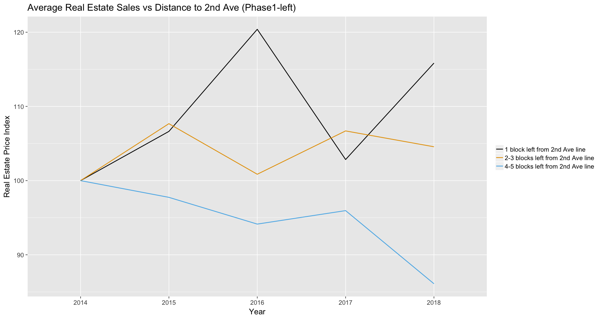
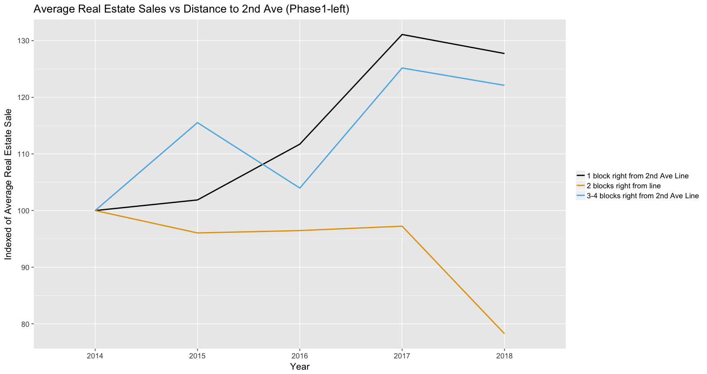

Analysis of Real State Sales
We want to look at the impact of the second avenue line by looking at how the real estate sales prices have changed in the areas surrounding the subway lines. Similar to looking at building permits, we are looking at how the prices have changed by block.
To reiterate, we’re using the NYC Department of Finance data on the real estate transactions in the zip codes surrounding the Upper East Side. We’ve narrowed down are real estate transactions to properties that are in tax two, and for sales prices between 100K and 5M. Here, we’re focusing on phase 1 and 2, since phase 3 and 4 are not built yet.
library(tidyverse)
library(ggplot2)
library("readxl")
library(reshape)
library(dplyr)
library("RSQLite")
library("ggthemes")data_ues_1718 <- read.csv(file="data/all_ues_sales_geocode_2017-2018.csv", header=TRUE, sep=",")
colnames(data_ues_1718)[colnames(data_ues_1718) == "SALE.PRICE"] <- 'price'
colnames(data_ues_1718)[colnames(data_ues_1718) == "YEAR"] <- 'year'
colnames(data_ues_1718)[colnames(data_ues_1718) == "ZIP.CODE"] <- 'zipcode'
colnames(data_ues_1718)[colnames(data_ues_1718) == "TAX.CLASS.AT.PRESENT"] <- 'TaxClass'
data_ues_1718 <- data_ues_1718[data_ues_1718$price > 100000,]
data_ues_1718 <- data_ues_1718[data_ues_1718$price < 5000000,]sqlite<- dbDriver("SQLite")
realestate <- dbConnect(sqlite,"/Users/sharontsao/Desktop/NYC_RealEstate_Sales.sqlite")
#dbListTables(realestate)
#data_14 = dbGetQuery(realestate,'select * from yr_2014')
data_ues = dbGetQuery(realestate,'
select year, nbhd, block, lot, address, zip, sale_date, price, long, lat
from yr_2016 where zip in (10065,10021, 10075, 10028 ,10029, 10128)
AND usable = "True"
AND tax_cls_s = 2
AND price > 100000
AND price < 5000000
UNION
select year, nbhd, block, lot, address, zip, sale_date, price, long, lat
from yr_2015 where zip in (10065,10021, 10075, 10028 ,10029, 10128)
AND usable = "True"
AND tax_cls_s = 2
AND price > 100000
AND price < 5000000
UNION
select year, nbhd, block, lot, address, zip, sale_date, price, long, lat
from yr_2014 where zip in (10065,10021, 10075, 10028 ,10029, 10128)
AND usable = "Y"
AND tax_cls_s = 2
AND price > 100000
AND price < 5000000');
write.csv(data_ues, 'ues_data_14-16.csv')# Left from 2nd Avenue Line
data_phase1_left_1718 <- data_ues_1718 %>%
mutate(Distance = ifelse(data_ues_1718$BLOCK %in% c(1424:1427, 1529:1532,1539:1541,1423,1428:1433,
1525:1528,1533:1538,1646),
'1 block left from 2nd Ave line',
ifelse(data_ues_1718$BLOCK %in% c(1404:1407,1512:1515,1522:1524,1403,1408:1413,
1508:1511,1516:1521,1624),
'2-3 blocks left from 2nd Ave line',
ifelse(data_ues_1718$BLOCK %in% c(1384:1387,1495:1498,1505:1507,1383,1388:1393,
1491:1494,1499:1504,1602),
'4-5 blocks left from 2nd Ave line',
'other'))))
data_phase1_left <- data_ues %>%
mutate(Distance = ifelse(data_ues$block %in% c(1424:1427, 1529:1532,1539:1541,1423,1428:1433,
1525:1528,1533:1538,1646),
'1 block left from 2nd Ave line',
ifelse(data_ues$block %in% c(1404:1407,1512:1515,1522:1524,1403,1408:1413,
1508:1511,1516:1521,1624),
'2-3 blocks left from 2nd Ave line',
ifelse(data_ues$block %in% c(1384:1387,1495:1498,1505:1507,1383,1388:1393,
1491:1494,1499:1504,1602),
'4-5 blocks left from 2nd Ave line',
'other'))))Analysis of Real Estate Sales Prices for Phase 1
To see how the subway has affected the real estate prices, we have added a distance column, which measure the number of blocks away from the subway, from the right/left side of the new Second Avenue line.
The reason why we are differentiating between blocks on the right and the left side is that the left side of the Second Avenue line has the current 4/5/6 line present, and that real estate prices there have probably already been saturated because of the 4/5/6 line. We conjectured that the right side of the Second Avenue line may have a bigger impact.
Properties on the left side of the 2nd Ave Line - Phase 1
Here, we visualize the data by summarizing sales date and distance, and scaling the data to 2014 as an index.
Given that the property values were stemmed to the same index in 2014, the real estate prices that are closest to the subway have grown dramatically compared to areas that are farther away. The Q line was opened on 1/1/2017, and we can see that there was a price inflection in 2017.
# Left from 2nd Avenue Line
#First, summarize by Filing.Date year and Distance:
library(lubridate) #dates library
data_phase1_left_edited_1416 <- data_phase1_left %>%
group_by(year, Distance) %>%
summarise(Mean = mean(price, na.rm=TRUE)) %>%
arrange(year) #arranges from lowest to highest value
data_phase1_left_edited_1416$year <- as.numeric(data_phase1_left_edited_1416$year)
data_phase1_left_edited_1718 <- data_phase1_left_1718 %>%
group_by(year, Distance) %>%
summarise(Mean = mean(price, na.rm=TRUE)) %>%
arrange(year)
year_factor <- factor(data_phase1_left_edited_1416$year)
data_phase1_left_edited = rbind(data_phase1_left_edited_1416, data_phase1_left_edited_1718)
#Now, scale the data and create an index to visualize variations over time, then plot:
data_phase1_left_edited <- data_phase1_left_edited %>% group_by(Distance) %>%
filter(year >= 1990) %>%
filter(Distance != "other") %>%
mutate(index = 100*Mean/Mean[1]) %>% ungroup()
year_factor <- factor(data_phase1_left_edited$year)
ggplot(data_phase1_left_edited, aes(x= year_factor, y = index, group = Distance, color = Distance)) + geom_line(stat='identity', lwd = 0.75) +
ggtitle("Average Real Estate Sales vs Distance to 2nd Ave (Phase1-left)") +
labs (x = "Year", y = "Real Estate Price Index") +
theme_grey(16) +
theme(legend.title = element_blank()) +
scale_colour_colorblind()
Conclusions: From the graph above, it seems that the prices are correlated by the availability of the new subway stations.
From the graph above, blocks one block left of the subway line have grew up to an index of ~115 since the Q line opening, blocks two/three blocks left of the subway line have stayed around the same, and blocks that are four/five blocks away have dropped to below 90 of index recently (2018). However, prices dipped for blocks that are one block away on 2017 while others grew a little bit. It’s hard to attribute what exactly is causing the sharp price change.
# Right from 2nd Avenue Line
data_phase1_right_1718 <- data_ues_1718 %>%
mutate(Distance = ifelse(data_ues_1718$BLOCK %in% c(1444:1447,1546:1549,1556:1558,1443,1448:1453,
1542:1545,1550:1555,1668),
'1 block right from 2nd Ave Line',
ifelse(data_ues_1718$BLOCK %in% c(1464:1467,1563:1566,1573,1463,1468:1473,
1559:1562,1567:1571,1690),
'2 blocks right from line',
ifelse(data_ues_1718$BLOCK %in% c(1482:1484,1580:1583,1480,1485:1490,1576:1579,
1584:1587,1590,1592,1589),
'3-4 blocks right from 2nd Ave Line',
'other'))))
data_phase1_right <- data_ues %>%
mutate(Distance = ifelse(data_ues$block %in% c(1444:1447,1546:1549,1556:1558,1443,1448:1453,
1542:1545,1550:1555,1668),
'1 block right from 2nd Ave Line',
ifelse(data_ues$block %in% c(1464:1467,1563:1566,1573,1463,1468:1473,
1559:1562,1567:1571,1690),
'2 blocks right from line',
ifelse(data_ues$block %in% c(1482:1484,1580:1583,1480,1485:1490,1576:1579,
1584:1587,1590,1592,1589),
'3-4 blocks right from 2nd Ave Line',
'other'))))Properties on the right side of the 2nd Ave Line - Phase 1
Here, we visualize the data by summarizing sales date and distance, and scaling the data to 2014 as an index.
Given that the property values were stemmed to the same index in 2014, the real estate prices that are one block away from the subway have grown dramatically while blocks that are two blocks away have dipped, especially since 2017. Blocks that are three/four away have grew with the one block.
# Right from 2nd Avenue Line
#First, summarize by Filing.Date year and Distance:
library(lubridate) #dates library
data_phase1_right_edited1416 <- data_phase1_right %>%
group_by(year, Distance) %>%
summarise(Mean = mean(price, na.rm=TRUE)) %>%
arrange(year) #arranges from lowest to highest value
data_phase1_right_edited1416$year <- as.numeric(data_phase1_right_edited1416$year)
data_phase1_right_edited1718 <- data_phase1_right_1718 %>%
group_by(year, Distance) %>%
summarise(Mean = mean(price, na.rm=TRUE)) %>%
arrange(year)
year_factor <- factor(data_phase1_right_edited1416$year)
data_phase1_right_edited = rbind(data_phase1_right_edited1416, data_phase1_right_edited1718)
#Now, scale the data and create an index to visualize variations over time, then plot:
data_phase1_right_edited <- data_phase1_right_edited %>% group_by(Distance) %>%
filter(year >= 1990) %>%
filter(Distance != "other") %>%
mutate(index = 100*Mean/Mean[1]) %>% ungroup()
year_factor <- factor(data_phase1_right_edited$year)
#Plot time series:
ggplot(data_phase1_right_edited, aes(x= year_factor, y = index, group = Distance, color = Distance)) + geom_line(stat='identity', lwd = 1) +
ggtitle("Average Real Estate Sales vs Distance to 2nd Ave (Phase1-left)") +
labs (x = "Year", y = "Indexed of Average Real Estate Sale") +
theme_grey(16) +
theme(legend.title = element_blank()) +
scale_colour_colorblind()
Conclusions: From the graph above, it seems like the new subway line has some effects on the real estate prices, but there probably is a bigger driver that’s keep the three/four blocks right of the Second Avenue line in sync with the One block.
From the Building Permits observation, we think that locations that are three/four blocks right from the Second Avenue line may always be a popular area because buildings there have a water view.
Analysis of Market Values for Phase 2
For Phase 2, we’re using a similar approach as Phase 1. We’ve gathered distance of blocks away from the line of the real estate sales and plotted out the average price sold for these locations. Our methodology is seen below and is similar to our methods in building permits.
Again, we have determined the following 4 categories:
- block numbers that are within 1 block to the left;
- block numbers that are within 1 block to the right;
- block numbers that are within 2-3 blocks to the left; and
- block numbers that are within 2-3 blocks to the right; from the 2nd Ave Line
data_phase2_1718 <- data_ues_1718 %>%
mutate(Distance = ifelse(data_ues_1718$BLOCK %in% c(1654:1656, 1665:1667,1788:1791,1647:1652,1659:1662,
1783:1787), '1 block left from phase 2 Line',
ifelse(data_ues_1718$BLOCK %in% c(1676:1678, 1687:1689, 1801:1803,1669:1675,
1680:1684,1795:1797),'1 block right from phase 2 Line',
ifelse(data_ues_1718$BLOCK %in% c(1625:1640,1643:1645,1767:1776),
'2-3 blocks left from phase 2 Line',
ifelse(data_ues_1718$BLOCK %in% c(1691,1693:1696,1699:1705,1708:1711,1713,1715:1716, 1806:1808,1815,1816,1811,1813),
'2-3 blocks right from phase 2 Line',
'other')))))
data_phase2_1416 <- data_ues %>%
mutate(Distance = ifelse(data_ues$block %in% c(1654:1656, 1665:1667,1788:1791,1647:1652,1659:1662,
1783:1787), '1 block left from phase 2 Line',
ifelse(data_ues$block %in% c(1676:1678, 1687:1689, 1801:1803,1669:1675,
1680:1684,1795:1797),'1 block right from phase 2 Line',
ifelse(data_ues$block %in% c(1625:1640,1643:1645,1767:1776),
'2-3 blocks left from phase 2 Line',
ifelse(data_ues$block %in% c(1691,1693:1696,1699:1705,1708:1711,1713,1715:1716, 1806:1808,1815,1816,1811,1813),
'2-3 blocks right from phase 2 Line',
'other')))))From our graph below, the patterns are a bit inconclusive as the subway line has not opened yet. One block left of the subway line has been having the most fluctuation in prices as it dropped down to index 45 in 2015 and went back up in 2016, then down again. Two/Three blocks from the right was doing slightly better in 2016, but dipped again with the rest of the real estate sales.
#library(dplyr)
#First, summarize by Year and Distance:
data_phase2_1416_edited <- data_phase2_1416 %>%
group_by(year, Distance) %>%
summarise(Mean = mean(price, na.rm=TRUE)) %>%
arrange(year)
data_phase2_1416_edited$year <- as.numeric(data_phase2_1416_edited$year)
data_phase2_1718_edited <- data_phase2_1718 %>%
group_by(year, Distance) %>%
summarise(Mean = mean(price, na.rm=TRUE)) %>%
arrange(year)
year_factor <- factor(data_phase2_1416_edited$year)
#colnames(data_phase2_1718_edited)[colnames(data_phase2_1718_edited) == "YEAR"] <- 'year'
data_phase2_edited = rbind(data_phase2_1416_edited, data_phase2_1718_edited)
#Now, scale the data and create an index to visualize variations over time, then plot:
data_phase2_edited <- data_phase2_edited %>% group_by(Distance) %>%
filter(Distance != "other") %>%
mutate(index = 100*Mean/Mean[1]) %>% ungroup()
year_factor <- factor(data_phase2_edited$year)
#Plot time series:
ggplot(data_phase2_edited, aes(x= year_factor, y = index, group = Distance, color = Distance)) +
geom_line(stat='identity', lwd = 1) +
ggtitle("Average Real Estate Sales Vs Distance to 2nd Ave (Phase 2)") +
labs (x = "Year", y = "Indexed of Average Real Estate Sale") +
theme_grey(16) +
theme(legend.title = element_blank()) +
scale_colour_colorblind()
Conclusions: From our observation on the Phase 2 line, it’s hard to predict how fast the real estate prices around these subway lines would respond to the constructions of the Second Avenue line. Since the lines haven’t been built, the growth/decline of the real estate around Phase 2 area is not as defined as the areas in Phase 1. Hence, we’d get a better idea once we’re closer to the finishing of the Phase 2 areas.